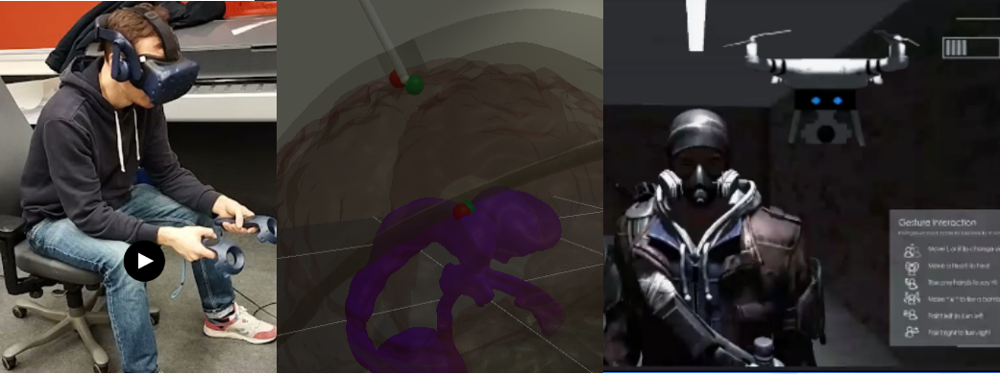

Combined VR post

This page presents and gives a brief summary for two of my recent projects relating to VR.
Both projects took place during autumn 2022 (November-Decemeber)
Shooter:Unknown
Shooter:Unknown is the second project completed for the Advanced Graphics and Interaction course at KTH. The project was centered around an intense two-player cooperative action game in which one player controlled a character weilding two pistols, while the other player (or players) controlled a drone. The goal of the pistol-weilding player in VR was to blast their way through a level filled with enemies. Meanwhile, the goal for the player(/players) was to control a drone using various body gestures in front of a tracking camera to grant various buffs to the player in VR.Check out the official project website Here
Mocap Project - Measuring precision in Desktop vs VR
This project presented a great opportunity of working with VR in a more academic context. At the heart of the project was the question of how precision in annotating (marking) points on either VR or desktop. During the project, a user study was carried out in which participants where tasked with reviewing a recording of motion captured data and, using VR controllers or keyboard and mouse, annotating exact points in time and space in the recording.More information about the project can be found on this Github page
There is also a short demo video of the project Here